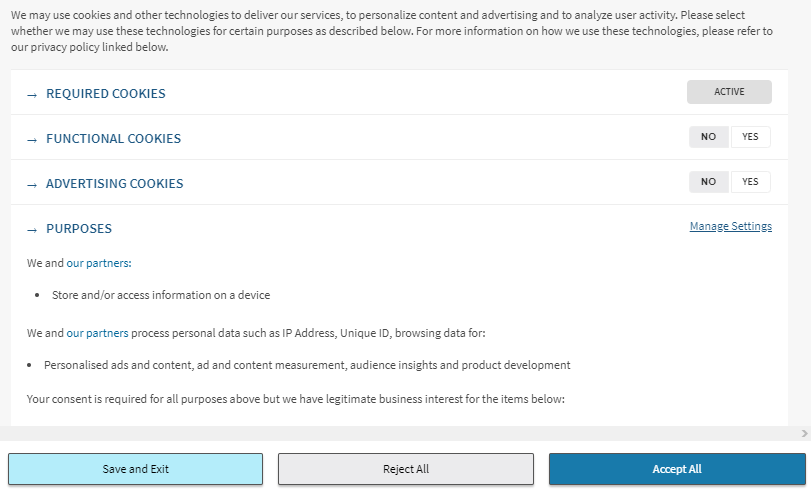

WWW (zkráceně také web) jsou aplikace internetového protokolu HTTP.
Webové stránky si prohlížíme pomocí webového prohlížeče, jsou uloženy na webových serverech a jsou navzájem propojeny pomocí hypertextových odkazů zapisovaných ve formě URL. Webové stránky jsou popsány pomocí HTML jazyka.
Autorem Webu je Tim Berners-Lee, který jej vytvořil při svém působení v CERNu. Navrhl jazyk HTML a protokol HTTP, napsal první webový prohlížeč WorldWideWeb a koncem roku 1990 spustil první webový server na světě info.cern.ch. V říjnu roku 1994 založil W3C, které dohlíží na další vývoj Webu.
WWW - otázky a odpovědi
Webové servery
Je to program, který příjmá a plní požadavky HTTP od klientů. Nejpoužívanějším webovým serverem vůbec je Apache HTTP Server, následovaný především Internet Information Services a nginx.
Serverový klient - prohlížeč
Je to program, který komunikuje s uživatelem a na základě jeho pokynů se obrací na jednotlivé servery, získává od nich data a zobrazuje je.
Ku příkladu:
- Mozzila Firefox
- Google Chrome
- Microsoft Edge
- Opera
- Safari
Základem služby WWW je komunikace mezi webovým klientem a webovým serverem pomocí protokolu HTTP. Webový server je připojen k počítačové síti a přijímá požadavky v souladu s protokolem HTTP. Odpověd je uvozena hlavičkou obsahující stavový kód, po ní následuje HTML kód, připojené soubory, CSS styly a programové soubory - Java Script(JS).
HTTP je internetový protokol určený pro komunikaci s WWW servery. Slouží pro přenos hypertextových dokumentů ve formátu HTML, XML, i jiných typů souborů. Komunikace je charakteru požadavek - odpověď.
| Stavové kódy | Info |
|---|---|
| 1xx | informační zpráva |
| 2xx | úspěšné vyřízení požadavku |
| 3xx | problémy spojené s přesměrováním |
| 4xx | chyby související s vyřízením požadavku (stránka není dostupná, apod.) |
| 5xx | interní chyby server |
HTTPS (HTTP se zabezpečením) je nadstavba protokolu HTTP, která poskytuje zvýšenou bezpečnost před odposloucháváním či podvržením dat. Pro komunikaci pomocí HTTPS musí nejdříve server vlastnit certifikát. Certifikát musí být podepsán tzv. certifikační autoritou, která zaručí, že vlastník certifikátu se nevydává za nikoho jiného. Webové prohlížeče jsou většinou vybaveny podpisovými certifikáty největších podpisových autorit.
Výhody HTTPS:
- možnost ověření identity
- důvěrnost přenášených dat
- integrita obsahu
URL je řetězec znaků s definovanou strukturou, který slouží k přesné specifikaci umístění zdrojů informací (ve smyslu dokument nebo služba) na Internetu. URL definuje doménovou adresu serveru, umístění zdroje na serveru a protokol, kterým je možné zdroj zpřístupnit.
Jako cookie (anglicky koláček, oplatka, sušenka) se v protokolu HTTP označuje malé množství dat, která WWW server pošle prohlížeči a ten je uloží na počítači uživatele. Při každé další návštěvě téhož serveru pak prohlížeč tato data posílá zpět serveru. Cookies běžně slouží k rozlišování jednotlivých uživatelů, ukládá se do nich obsah „nákupního košíku“ v elektronických obchodech, uživatelské předvolby apod. Cookie mohou být nebezpečné pro ochranu soukromí. Navštívený web si totiž může ukládat do cookies jakékoliv informace, které o návštěvníkovi shromáždí. Těchto informací se dá posléze i proti vůli návštěvníka zneužívat pro cílenou reklamu, statistické vyhodnocování chování návštěvníků apod.

- Prohledání webových stránek. Pro prohledání webových stránek má internetový vyhledávač automatický program, tzv. vyhledávací robot (crawler, bot, nebo též spider – „pavouk“), který prochází celý webový prostor. Robot dostane na začátku seznam atraktivních vstupních míst (odkazů), jejichž obsah si přečte, uloží do databáze a zapamatuje si navštívenou adresu odkazu, aby se na ni již podruhé nevracel. Z obsahu stažené stránky vybere seznam všech obsažených odkazů a opět všechny odkazy navštíví. Cyklus návštěvy, sesbírání odkazů a dalších návštěv se stále opakuje. Robot se na navštívené stránky vrací v pravidelných intervalech, aby zjistil, zda se na stránce neobjevily nějaké nové informace. Z principu práce vyhledávače vyplývá, že nikdy nemá úplně aktuální informace, ale prezentuje je se zpožděním.
- Indexování. Databázi obsahující uložené obsahy navštívených stránek je potřeba indexovat, aby bylo možné podle zadaných slov co nejrychleji najít adresy stránek, které je obsahují. Zároveň je nutné vystavět index tak, aby poskytoval na prvních místech stránky s nejvyšší užitnou hodnotou (relevancí, mající nejvyšší hodnocení kvality, nejvyšší váhu). Pro výpočet relevance se používají nejrůznější algoritmy, které jsou založeny na nejrůznějších znacích stránek a různých úhlech analýzy jejich obsahu: váha slov, atraktivita stránky, serióznost webu, sponzorované odkazy a technická kvalita
HTML je v informatice název značkovacího jazyka používaného pro tvorbu webových stránek, které jsou propojeny hypertextovými odkazy. Za hypertext označujeme takový text, který obsahuje propojení na jiné texty pomocí tzv. hypertextových odkazů. Ve službě WWW jsou realizovány jako tzv. URL odkazy.